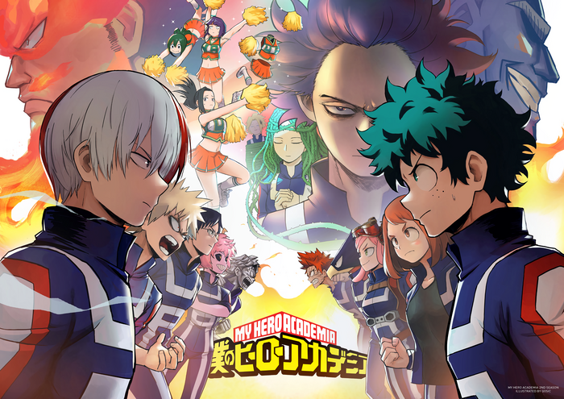
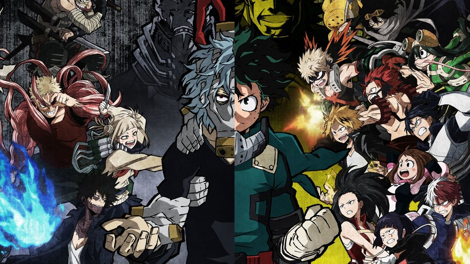
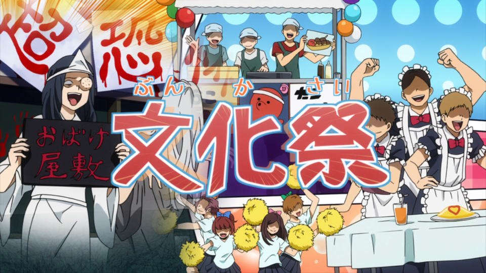
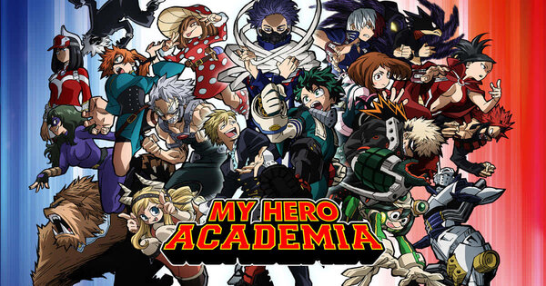
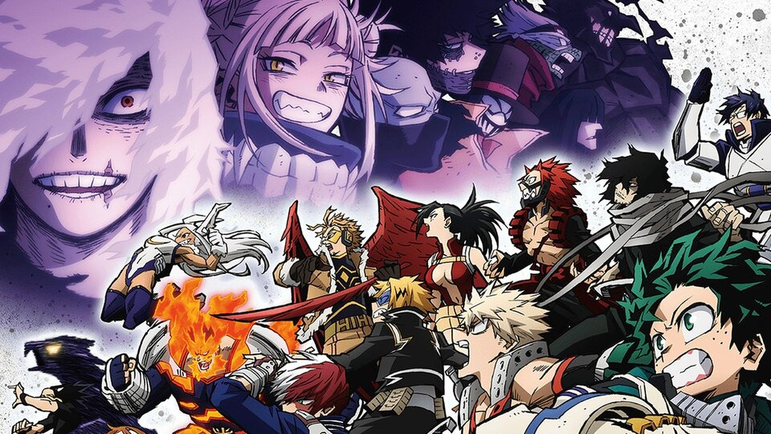
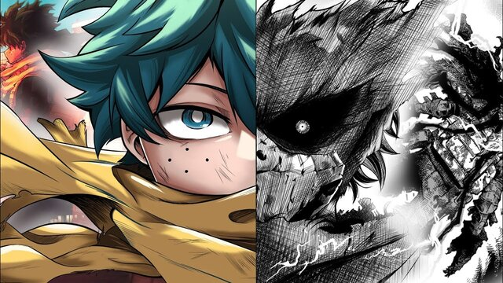
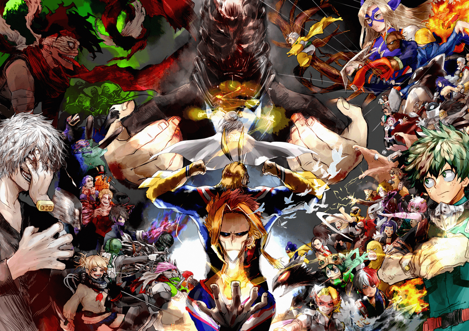

Arcs
There are many different sections, or arcs, as the story develops.
Want to know which arc(s) of the story is/are the most thrilling?
Take a look at each arc and its description!
List of arcs:
U.S.J arc
- U.S.J. arc
- U.A. Sports Festival arc
- Forest Training arc
- U.A. School Festival arc
- Joint Training arc
- Paranormal Liberation War arc
- Vigilante Deku arc
- Final War arc
It marks the beginning of the series. As Midoriya enrolled in the new hero school, his classmates and him were training together in a special place inside the school called "U.S.J". The training was successful. However, villains broke into the school and came to U.S.J. and started to attack the students and the teachers, who are Pro heroes. The group of villains call themselves League of Villains.
U.A. Sports Festival arc
After the U.S.J. event, the school is more alert and careful with its security system. However, the principal sees it profitable to hold the annual Sports Festival of the school so that villains can see how good the new hero students are and to show the world that the heroes today are reliable so that peace can prevail. This arc describes the different sessions of the Sports Festival and shows how Midoriya and his classmates show-off their skills and quirks.
Forest Training arc
The Sports Festival ended, and the students who want to become heroes are getting hired as interns to work with Pro heroes. They have different challenges to face during the internships, and after they come back from their internships, they all understand that they are not strong enough and want to get more training. The school offers them a forest training, during which the students will all live in an apartment built in a forest and they will need to take care of themselves. There are some Pro heroes who are there to offer the instructions for the training program. However, during the training, League of Villains found them and attacked them. Bakugou is captured by the villains and offered a chance to join the League of Villains.
U.A. School Festival arc
After the forest training, everything is back to normal. The school decided to hold a school festival for students to relax. Musical performances, magic shows, food trucks, and a lot of other things happened during the festival. There is a villain who wants to break into the school to boost his reputation as a villain, but after a fight with Midoriya, he realized he is doing a wrong thing and gives himself to the police.
Joint Training arc
The students need to be trained more in order to keep up with the increased rate of crime. There are two hero classes, Class A and Class B, and they are randomly assigned into groups of 5. The groups are required to have a match or fight.
Paranormal Liberation War arc
While the students are getting more training, the villains, especailly the League of Villains, also get power boosts. Citizens are gradually being labeled as "quirk users" and "non quirk users". Those who are "quirk users" started to form an organization named "Meta Liberation Army" to persecute Pro heroes and other citizens, just to prove themselves to be "special". As the persecution goes bigger and affects more people, it also affects the members of the League of Villains, and without qualms, the members start to rebel against Meta Liberation Army and start to kill a lot of them. It is during the rebellion that nearly every single member of the League of Villains realizes the potential of their powers, and their true powers awaken. The awakened power of Shigaraki, the leader of League of Villains, is too powerful and intimidating. Soon after the awakening of the powers, Meta Liberation Army joins League of Villians and Shigaraki becomes the leader of the new organization, named "Paranormal Liberation Front".
Vigilante Deku arc
To fight against Paranormal Liberation Front, every hero is called to fight villains and protect innocent citizens. Since Midoriya and his classmates are still students, they are assigned to guide citizens and help them escape. However, Shigaraki is very interested in the quirk Midoriya has. Therefore, Shigaraki and Midoriya has a fight and during that fight, many people get hurt including Todoroki and Bakugou and their teachers. Even though everyone fights with their all, it is still very hard to completely stop Shigaraki. At the end of the fight, Shigaraki gets seriously injured and successfully escapes. Having a great sense of righteousness and being very responsible, Midoriya thinks that everything happened because of him, and he becomes very sad and thus becomes a solo hero and a vigilante.
Final War arc
After Midoriya has been gone for a while, his classmates are able to track him and they decide to stop Midoriya from taking all the responsibilities on himself. They talk to Midoriya and even fight against him just to stop him from escaping again from them. After some efforts and time, Midoriya comes back to them, and it also marks the beginning of the final war between the heroes and the villains. While Midoriya is being a vigilante, Shigaraki and his fellow villains gather more villains together and plan to kill all heroes for one last time. Before Midoriya recovers fully from all his injuries, the villains have already started the final war.